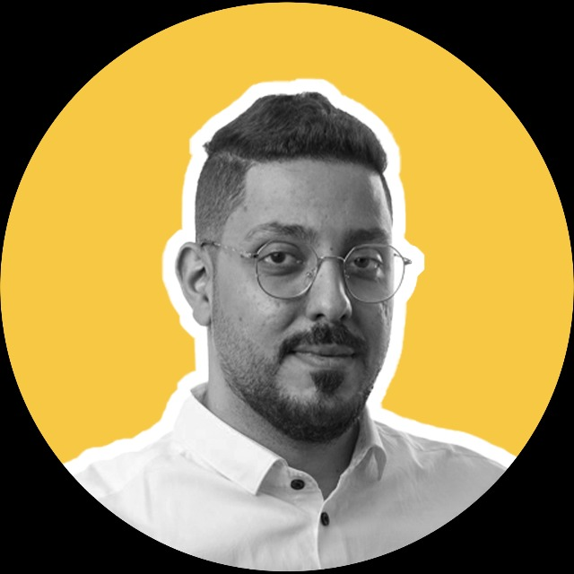

Adnan H. Fatiyyha
Web Developer
Summry
Experienced in (Fintech) field, Targets growth through building diverse teams and focusing
on a format of listening to clients for best outcomes, detail-oriented team player with strong
blended experience in organizational and coding skills.
Education
Bachelor of ITC, (Information and Computing)
Arab Open University | 2017- 2022
Work Experince
IT Operations Supervisor
Geidea Company for solutions| Jun 2021 - Present
- Initiate tasks and align them with the team
- Engage with employees' KPIs and OKRs and arrange it with department capacity.
- Address technical issues and put solving strategies for it.
- Overseeing the performance of associated teams and related stakeholders.
- Provide periodical reports to the stakeholders,
- Creating a life dashboard of POS and transactions performance.
Skills
- VS Studio / Android Studio
- GITHUB
- Google Studio DB and APPs
- Atlassian - Jira
- ATLASSIAN - Confluence
- React.JS
© 2023 Adnan